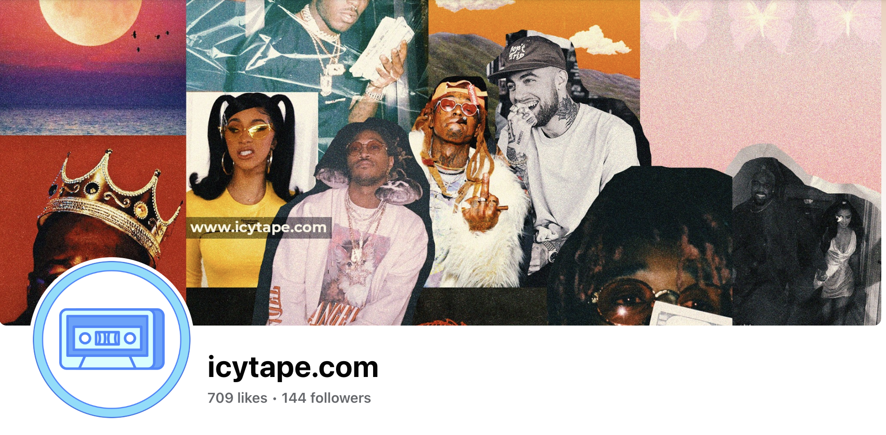
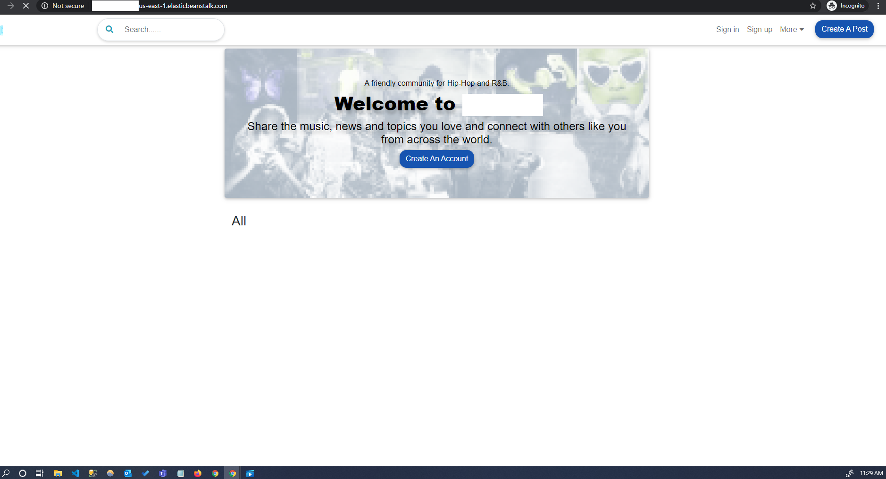
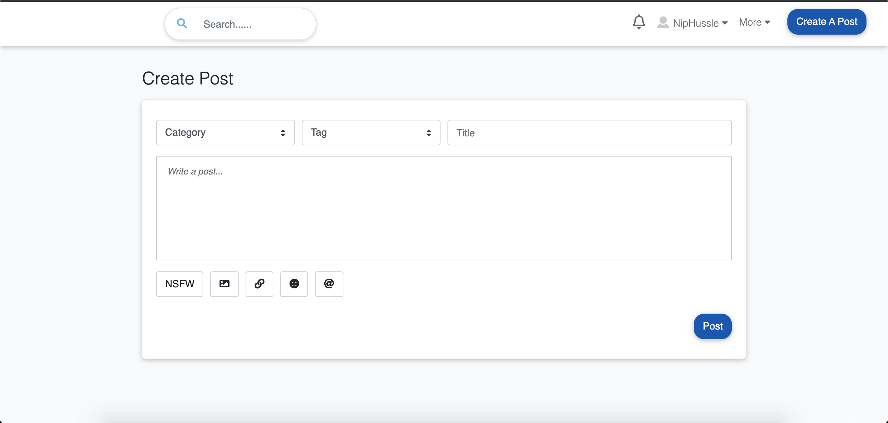
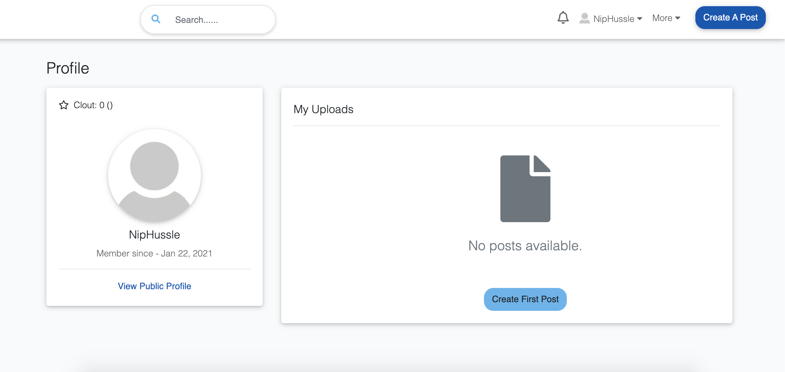
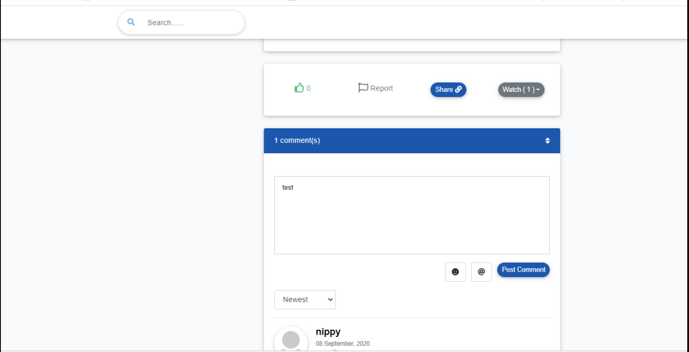
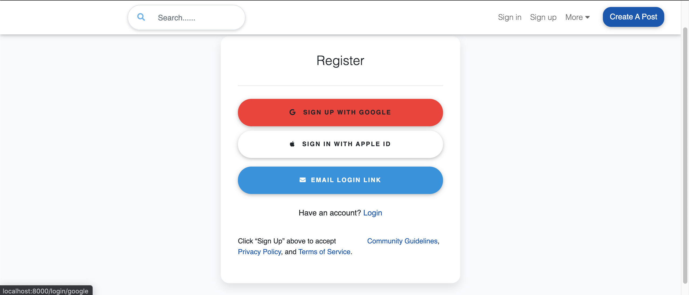
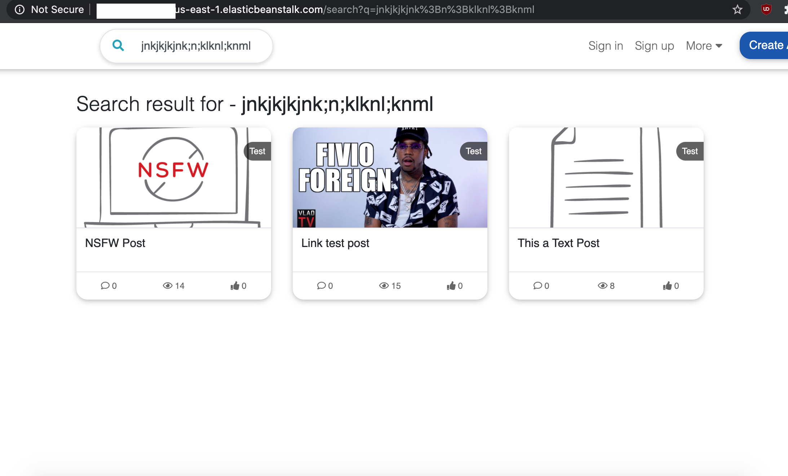
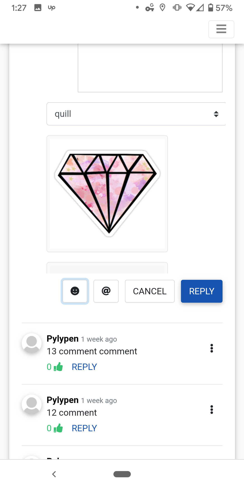

<div id="ajax-page" class="ajax-page-content">
    <div class="ajax-page-wrapper">
        <div class="ajax-page-nav">
            <div class="nav-item ajax-page-prev-next">
                <a class="ajax-page-load" href="portfolio-project-1.html"><i class="lnr lnr-chevron-left"></i></a>
                <a class="ajax-page-load" href="portfolio-project-3.html"><i class="lnr lnr-chevron-right"></i></a>
            </div>
            <div class="nav-item ajax-page-close-button">
                <a id="ajax-page-close-button" href="#"><i class="lnr lnr-cross"></i></a>
            </div>
        </div>

        <div class="ajax-page-title">
            <h1>IcyTape Hip Hop Forum</h1>
        </div>

        <div class="row">
            <div class="col-sm-8 col-md-8 portfolio-block">
                <div class="owl-carousel portfolio-page-carousel">
                    <div class="item">
                        
                    </div>
                    <div class="item">
                        
                    </div>
                    <div class="item">
                        
                    </div>
                    <div class="item">
                        
                    </div>
                    <div class="item">
                        
                    </div>
                    <div class="item">
                        
                    </div>
                    <div class="item">
                        
                    </div>
                    <div class="item">
                        
                    </div>
                </div>

                <!-- Project Details Section Start -->
                <div class="full-detail-section mt-5">
                    <div class="block-title mb-4">
                        <h2 class="text-center">IcyTape — Hip Hop Community Forum (Built & Sold)</h2>
                    </div>

                    <h4>Project Summary:</h4>
                    <p>
                        Built a custom hip-hop community forum from scratch (not off-the-shelf forum software), optimized for fast posting,
                        rich media embeds, and strong moderation. Led the project end-to-end — product, engineering, launch — and ultimately
                        sold the platform to a niche competitor.
                    </p>

                    <h4>My Role:</h4>
                    <ul class="list-group list-group-flush mb-4">
                        <li class="list-group-item">
                            <strong>Product & Strategy:</strong> Defined the community experience, feature set, and launch plan based on user behavior and engagement patterns.
                        </li>
                        <li class="list-group-item">
                            <strong>Full-Stack Development:</strong> Built core forum functionality in Laravel/PHP with dynamic UI behavior in jQuery; shipped production-ready releases.
                        </li>
                        <li class="list-group-item">
                            <strong>Identity & Growth:</strong> Implemented social login and frictionless access patterns (Google/Facebook + magic-link style login flows).
                        </li>
                        <li class="list-group-item">
                            <strong>Media & Embeds:</strong> Integrated third-party APIs to support image uploads and rich link previews (Imgur, Iframely).
                        </li>
                        <li class="list-group-item">
                            <strong>Trust & Safety:</strong> Added spam prevention and content quality controls (Akismet) plus error tracking/observability (Sentry).
                        </li>
                        <li class="list-group-item">
                            <strong>Infrastructure:</strong> Deployed and operated on AWS with reliability and scalability in mind.
                        </li>
                        <li class="list-group-item">
                            <strong>Go-to-Market & Exit:</strong> Led early marketing efforts, partnership discussions, and negotiated the sale of the product.
                        </li>
                    </ul>

                    <h4>Architecture:</h4>
                    <ul class="list-group list-group-flush mb-4">
                        <li class="list-group-item">
                            <strong>Custom Forum Core:</strong> Implemented posts, threads, comments, reactions, and user profiles with full control over UX and performance (no plugin limitations).
                        </li>
                        <li class="list-group-item">
                            <strong>Rich Content Pipeline:</strong> Enabled media uploads + link preview rendering through API integrations (Imgur + Iframely) to drive engagement and time-on-site.
                        </li>
                        <li class="list-group-item">
                            <strong>Authentication & Identity:</strong> Social login via Google/Facebook plus magic-link flows to reduce signup friction and increase conversion.
                        </li>
                        <li class="list-group-item">
                            <strong>Moderation & Abuse Prevention:</strong> Akismet-based spam detection and admin tooling patterns to support real-world community operations.
                        </li>
                        <li class="list-group-item">
                            <strong>Observability:</strong> Integrated Sentry for error monitoring and rapid debugging to maintain platform stability during growth.
                        </li>
                        <li class="list-group-item">
                            <strong>Scalability Foundations:</strong> Deployed on AWS with a design focus on reliability, maintainability, and the ability to evolve features quickly.
                        </li>
                    </ul>

                    <h4>Conclusion / Outcome:</h4>
                    <p>
                        Delivered a production-grade community platform with a differentiated rich-media experience and operational readiness
                        (moderation + observability). The forum gained traction, validated product-market fit in a niche audience, and was
                        ultimately <strong>sold to a competitor</strong> — demonstrating full lifecycle ownership from build → launch → exit.
                    </p>
                </div>
                <!-- Project Details Section End -->

                <script type="text/javascript">
                    jQuery(document).ready(function ($) {
                        $('.portfolio-page-carousel').imagesLoaded(function () {
                            $('.portfolio-page-carousel').owlCarousel({
                                smartSpeed: 1200,
                                items: 1,
                                loop: true,
                                dots: true,
                                nav: true,
                                navText: false,
                                margin: 10,
                                autoHeight: true
                            });
                        });
                    });
                </script>

            </div>

            <div class="col-sm-4 col-md-4 portfolio-block">
                <!-- Project Description -->
                <div class="project-description">
                    <div class="block-title">
                        <h3>Description</h3>
                    </div>

                    <p>
                        Custom hip-hop community forum built from scratch with rich media embeds, social login, and strong moderation controls.
                        Led end-to-end delivery (product + engineering + launch) and successfully sold the platform to a niche competitor.
                    </p>
                    <!-- /Project Description -->

                    <!-- Technology -->
                    <div class="tags-block">
                        <div class="block-title">
                            <h3>Technology</h3>
                        </div>
                        <ul class="tags">
                            <li><a>Laravel</a></li>
                            <li><a>PHP</a></li>
                            <li><a>jQuery</a></li>
                            <li><a>Imgur API</a></li>
                            <li><a>Google API</a></li>
                            <li><a>Facebook API</a></li>
                            <li><a>Magic Link</a></li>
                            <li><a>Iframely API</a></li>
                            <li><a>Akismet API</a></li>
                            <li><a>Sentry</a></li>
                            <li><a>AWS</a></li>
                        </ul>
                    </div>
                    <!-- /Technology -->
                </div>
                <!-- /Project Description -->
            </div>
        </div>
    </div>
</div>